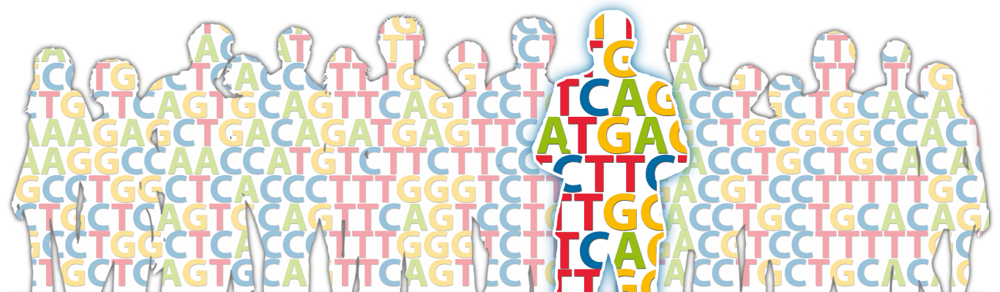

|
Last updated on 13/07/2022

Inken Wohlers
Medical Systems Biology NewsParticipate in an article collection I am co-editing: Long read sequencing - pitfalls, benefits and success stories Expertise
Biography
Current Projects
Publications
R. Saurabh, C. Fouodo, I. König, H. Busch and I. Wohlers. A survey of genome-wide association studies (GWAS), polygenic scores (PGS) and UK Biobank (UKB) highlights resources for autoimmune disease genetics. Accepted at Front. Immunol. 2022
T. Lüth, J. Laß, S. Schaake, I. Wohlers, J. Pozojevic, R. D. G. Jamora, R. L. Rosales, N. Brüggemann, G. Saranza, C. C. E. Diesta, K. Schlüter, R.
Tse, C. J. Reyes, M. Brand, H. Busch, C. Klein, A. Westenberger and J. Trinh. Elucidating Hexanucleotide Repeat Number and Methylation within the X-Linked
Dystonia-Parkinsonism (XDP)-Related SVA Retrotransposon in TAF1 with Nanopore Sequencing. Genes. 2022
I.Wohlers, H. Pott, S. Schaake, J. Trinh, H. Busch and K. Lohmann. Be aware of pitfalls: Bioinformatic analysis of Cas9-targeted Nanopore sequencing of the RFC1 repeat in CANVAS. Movement Disorders 2021
M. Munz, M. Khodaygani, Z. Aherrahrou, H. Busch and I. Wohlers. In silico candidate variant and gene identification using inbred mouse strains. PeerJ 2021
D. Prokopenko, S. L. Morgan, K. Mullin, O. Hofmann, B. Chapman, R. Kirchner, S. Amberkar, I. Wohlers, C. Lange, W. Hide, L. Bertram and R. E. Tanzi. Whole-genome sequencing reveals new Alzheimer’s disease-associated rare variants in loci related to synaptic function and neuronal development. Alzheimers. Dement. 2021
M. Ohms, C. Ferreira, H. Busch, I. Wohlers, A. C. Guerra de Souza, R. Silvestre and T. Laskay. Enhanced glycolysis is required for antileishmanial functions of neutrophils upon infection with Leishmania donovani. Front. Immunol. 2021
M. Munz, I. Wohlers, E. Simon, T. Reinberger, H. Busch, A. S. Schaefer, J. Erdmann. Qtlizer: comprehensive QTL annotation of GWAS results. Sci. Rep. 2020
I. Wohlers, A. Kuenstner, M. Munz, M. Olbrich, A. Faehnrich, V. Calonga-Solís, C. Ma, M. Hirose, S. El-Mosallamy, M. Salama, H. Busch and S. Ibrahim. A personal and population-based Egyptian genome reference. Nat. Commun. 2020
S. T. Jünger, F. Andreiuolo, M. Mynarek, I. Wohlers, S. Rahmann, L. Klein-Hitpass, E. Dörner, A. Zur Mühlen, N. Velez-Char, K. von Hoff, M. Warmuth-Metz, R. D. Kortmann, B. Timmermann, A. von Bueren, S. Rutkowski, T. Pietsch. CDKN2A deletion in supratentorial ependymoma with RELA alteration indicates a dismal prognosis: a retrospective analysis of the HIT ependymoma trial cohort. Acta Neuropathol. 2020
S. T. Jünger, M. Mynarek, I. Wohlers, E. Dörner, A. zur Mühlen, N. Velez-Char, K. von Hoff, S. Rutkowski, M. Warmuth-Metz, R.-D. Kortmann, B. Timmermann, S. Rahmann, L. Klein-Hitpass, A. von Bueren, T. Pietsch. Improved risk-stratification for posterior fossa ependymoma of childhood considering clinical, histological and genetic features – a retrospective analysis of the HIT ependymoma trial cohort. Acta Neuropathol. Commun. 2019
I. Wohlers, C. Schulz, F. Kilpert, L. Bertram. Alzheimer's disease risk SNPs show no strong effect on miRNA expression in human lymphoblastoid cell lines. Neurobiol. Aging. 2019
P. Takousis*, A. Sadlon*, J. Schulz, I. Wohlers, V. Dobricic, L. Middleton, C. M. Lill, R. Perneczky, L. Bertram. (* joint first authors) Differential expression of microRNAs in Alzheimer's disease brain, blood and cerebrospinal fluid: a systematic review and meta-analysis. Alzheimer's & Dementia. 2019
J. Schulz*, P. Takousis*, I. Wohlers, I. O. G. Itua, V. Dobricic, G. Rücker, H. Binder, L. Middleton, J. P. A. Ioannidis, R. Perneczky, L. Bertram, C. M. Lill. (* joint first authors) Meta-analyses identify differentially expressed microRNAs in Parkinson's disease. Ann Neurol. 2019
I. Wohlers and L. Bertram. Taking genomics research to the next level: The Genotype-Tissue expression project. Mov Disord. 2018
I. Wohlers, L. Bertram and C. M. Lill. Evidence for a potential role of miR-1908-5p and miR-3614-5p in autoimmune disease risk using integrative bioinformatics. J Autoimmun. 2018
B. Grüning* , R. Dale*, [...] I. Wohlers [...] and J. Köster. (* joint first authors) Bioconda: A sustainable and comprehensive software distribution for the life science. Nat Methods. 2018
P. Johansson, A. Bergmann, S. Rahmann, I. Wohlers, R. Scholtysik, M. Przekopowitz, M. Seifert, G. Tschurtschenthaler, G. Webersinke, U. Jäger, R. Siebert, L. Klein-Hitpass, U. Dührsen, J. Dürig and R. Küppers. Recurrent alterations of TNFAIP3 (A20) in T-cell large granular lymphocytic leukemia. Int J Cancer. 2016
R. Andonov, H. Djidjev, G. W. Klau, M. Le Boudic-Jamin and I. Wohlers. Automatic Classification of Protein Structure Using the Maximum Contact Map Overlap Metric. Algorithms, Special issue Algorithmic Themes in Bioinformatics. 2015
C. M. Lill, F. Luessi, A. Alcina, E. A. Sokolova, N. Ugidos, B. de la Hera, L. Guillot-Noël, S. Malhotra, E. Reinthaler, B.-M. M. Schjeide, J. Y. Mescheriakova, A. Mashychev, I. Wohlers et al. Genome-wide significant association with seven novel multiple sclerosis risk loci. J Med Genet. 2015
T. Pietsch, I. Wohlers, T. Goschzik, V. Dreschmann, D. Denkhaus, E. Dörner, S. Rahmann, and L. Klein-Hitpass. Supratentorial ependymomas of childhood carry C11orf95–RELA fusions leading to pathological activation of the NF-κB signaling pathway. Acta Neuropathol. 2014
M. El-Kebir*, T. Marschall*, I. Wohlers*, M. Patterson, J. Heringa, A. Schönhuth, and G. W. Klau. (* joint first authors) Mapping proteins in the presence of paralogs using units of coevolution. BMC Bioinformatics. 2013
I. Wohlers, R. Andonov and G. W. Klau. DALIX: Optimal DALI protein structure alignment. IEEE/ACM Trans Comput Biol Bioinform. 2013
I. Wohlers, N. Malod-Dognin, R. Andonov, and G. W. Klau. CSA: comprehensive comparison of pairwise protein structure alignments. Nucleic Acids Res. 2012
I. Wohlers, R. Andonov, and G. W. Klau. Algorithm engineering for optimal alignment of protein structure distance matrices. Optimization Letters. 2011
I. Wohlers, F. S. Domingues, and G. W. Klau. Towards optimal alignment of protein structure distance matrices. Bioinformatics. 2010
I. Wohlers*, H. Stachelscheid*, J. Borstlap, K. Zeilinger, and J. C. Gerlach. (* joint first authors) The Characterization Tool: A knowledge-based stem cell, differentiated cell, and tissue database with a web-based analysis front-end. Stem Cell Res. 2009 Preprints
M. Thomsen*, A. Kuenstner*, I. Wohlers, M. Olbrich, T. Lenfers, T. Osumi, Y. Shimazaki, K. Nishifuji, S. M. Ibrahim, A. Watson§, H. Busch§ and M. Hirose. (*joint first authors; §equal contribution). A comprehensive analysis of the gut and skin microbiota in canine atopic dermatitis in Shiba Inu dogs. bioRxiv 2022.07.11.497949 . 2022
A. Fähnrich*, I. Stephan*, M. Hirose, M. Ali Awadelkareem, S. Ibrahim, H. Busch§ and I. Wohlers§. (*joint first authors; §joint last authors). North and East African mitochondrial genetic variation needs further characterization towards precision medicine. bioRxiv 2021.12.10.472079. 2021
I. Wohlers, V. Calonga-Solís, J.-N. Jobst and H. Busch. COVID-19 genetic risk and Neanderthals: A case study highlighting the importance of scrutinizing diversity. bioRxiv 2020.11.02.365551. 2020 Bachelor's, Master's and PhD thesisExact algorithms for pairwise protein structure alignment. PhD thesis at the Free University Amsterdam, December 2012. Alignment of protein distance matrices with mathematical programming. M.Sc. thesis at the Free University Berlin, August 2008. Direkte Suchmethoden und ihre Anwendung zur Schätzung endokriner Parameter. B.Sc. thesis at the University of Lübeck, August 2005. |